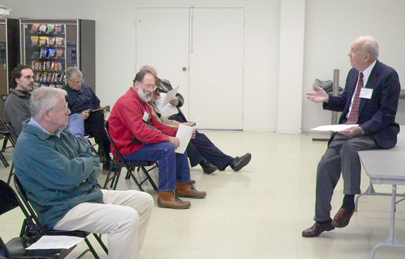

Before My Clock Stops, What Can/Should I Do With My Collection? (Estate Planning)
This is an archived report. Meeting places, times and people have changed since it was written. See Meetings for current details.
Our January 9, 2005 started the new year with a better than average MART turnout. Table holders seemed to be happy. When the silent auction whistle blew, there was little left that had not been bid on. The MART is what this Chapter is known for.
Our membership meeting followed the Mart with a poor member turnout. The usual announcements were made, Regional dates announced and the Chapter’s door prizes passed out.

Our speaker for the day was Director Robert Moore and his topic was “What should I do with my collection? or-WORSE-What will happen to my collection?” Highlights were; Thinking about a plan; What happens when there is no plan?; Valuation by types-Retail, Wholesale, Insured Value, Street Value, Donation Value and Gift Value.
- Timing: When should we start thinking and planning?
- What are the values in having a plan?
- What happens when there are no plans?
- Do you want to be in on the planning or let the plans evolve by golly or by gosh?
Valuation: Here is the real quagmire!
Ways of establishing values:
- Retail
- Wholesale
- Insured Value
- Street buy/sell
- Gift value
Factors in selling or disposing-where, how and when. (like now when I can control the sale) and finely how do I maintain an inventory of what I have. Robert’s presentation had a number of answers but left room for a number of additional thoughts.
A Chapter Board meeting followed the membership meeting.